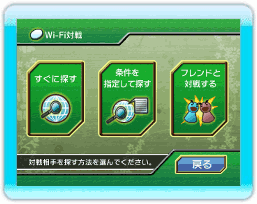

16 |
対戦の始め方 |
 |

Wi-Fi対戦メニューからWi-Fiで対戦を選ぶと、対戦相手を探す方法を選ぶ画面になります。
対戦相手が見つかると自動的に対戦が始まります。 見つかる対戦相手は自分と同じくらいの強さ（レート）の相手です。 また、自分の手番の制限時間（一手毎の持ち時間）は、３０秒です。
指定できる条件： ●制限時間…一手毎の持ち時間です。３０秒、１分、２分、３分の中から選べます。 ●強さ…同じくらいの強さの相手を探すか、強さを気にせず探すかを選べます。 ●戦績…対戦の結果を残すかどうかを選べます。 対戦相手が見つかると対戦相手の情報が表示されます。対戦相手を確認して対戦を行なってください。
●部屋を作成する 「部屋を作成する」を選ぶと、部屋を作成して対戦するフレンドを待ちます。 ※「部屋」とはフレンドリストに登録されているフレンドだけが参加できる対戦場です。 ●部屋に入る フレンドが部屋を作成していると画面左のリストにフレンドが作った部屋がフレンドの名前で表示されています。参加したい部屋を選ぶと、そのフレンドと対戦ができます。 また、自分の手番の制限時間（一手毎の持ち時間）は、１分です。 |
 |
 |
 |